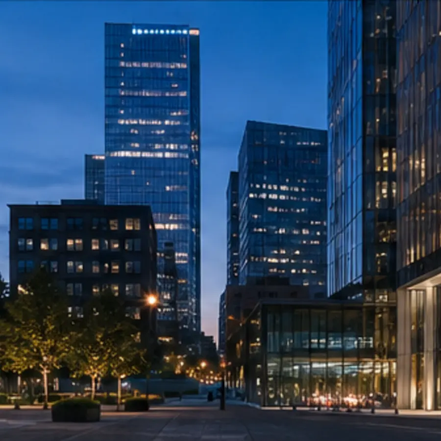

Business / Product
Present your product and services so the choice feels obvious.
A complete business structure for a company, product, or service: a clear offer, proof, process, and a calm path to contact.
A complete business structure for a company, product, or service: a clear offer, proof, process, and a calm path to contact.
Visitors immediately understand what you do, why they can trust you, and what their next step should be.
The main idea is visible in the first viewport and never gets lost in decoration.
Cases, figures, and process are part of the story instead of a random card grid.
The contact path stays present without turning the site into an aggressive funnel.
One strong case explains the challenge, the work, and the measurable outcome better than ten generic promises.

Every phase ends with a concrete result that can be reviewed and accepted.
The challenge, audience, constraints, and actual product state.
The journey, pages, content, and visual hierarchy.
A working release with responsive layouts, themes, and verified routes.
Measurement, new sections, and changes without rebuilding the foundation.